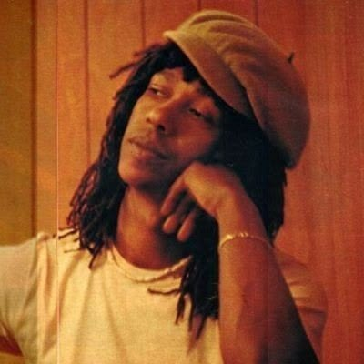
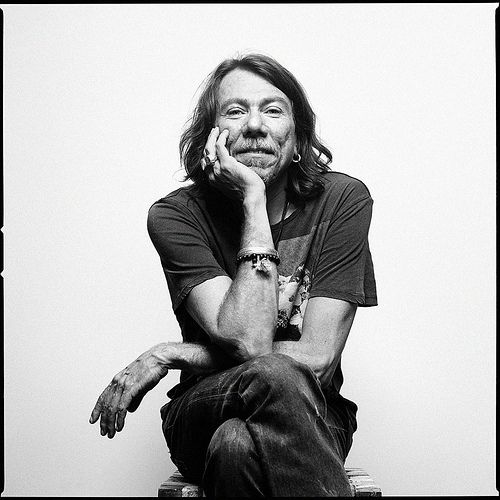

A MPB foi construída por grandes artistas que deixaram suas marcas na história da música brasileira. Cada cantor e compositor trouxe sua própria maneira de interpretar o Brasil, criando músicas que atravessaram gerações e continuam presentes na memória do público.
Nesta página, você conhecerá alguns dos principais nomes da MPB e uma música de destaque de suas carreiras.

Elis Regina foi uma das maiores intérpretes da música brasileira. Conhecida por sua voz marcante e por sua grande presença no palco, tornou-se uma das artistas mais importantes da MPB.
Música de destaque: Como Nossos Pais

Milton Nascimento é um dos grandes nomes da música brasileira. Sua carreira ficou marcada por uma voz única e por músicas que misturam diferentes elementos da cultura brasileira.
Música de destaque: Travessia

Caetano Veloso é um dos compositores e cantores mais importantes da música brasileira. Participou do movimento Tropicália e construiu uma carreira marcada pela criatividade e pela experimentação musical.
Música de destaque: Sozinho

Gilberto Gil é cantor e compositor e um dos grandes representantes da música brasileira. Sua obra reúne elementos de diferentes ritmos e culturas, tornando sua música muito diversificada.
Música de destaque: Aquele Abraço

Chico Buarque é um dos maiores compositores da música brasileira. Suas canções são conhecidas pelas letras marcantes e pela maneira criativa de contar histórias através da música.
Música de destaque: Construção

Gal Costa foi uma das grandes vozes da música brasileira. Com uma carreira marcada pela versatilidade, participou de importantes momentos da MPB e da Tropicália.
Música de destaque: Baby

Maria Bethânia é uma das grandes intérpretes brasileiras. Sua voz e sua forma intensa de interpretar músicas e poesias fizeram dela uma figura marcante na história da MPB.
Música de destaque: Negue

Djavan é cantor, compositor e violonista. Suas músicas apresentam uma mistura de MPB, samba, ritmos brasileiros e outras influências, criando um estilo muito característico.
Música de destaque: Flor de Lis

Jorge Ben Jor é conhecido por misturar samba, rock, funk e outros ritmos em suas músicas. Seu estilo ajudou a criar uma sonoridade muito particular na música brasileira.
Música de destaque: País Tropical

Marisa Monte é uma das importantes artistas da música brasileira contemporânea. Sua carreira reúne elementos da MPB e de diferentes estilos, com uma interpretação delicada e marcante.
Música de destaque: Bem Que Se Quis

Adriana Calcanhotto é cantora, compositora e intérprete. Seu trabalho apresenta diferentes influências e uma forte relação entre música, poesia e literatura.
Música de destaque: Vambora

Lenine é cantor e compositor pernambucano. Sua música mistura elementos da MPB com ritmos brasileiros e influências de outros estilos, criando uma sonoridade moderna e original.
Música de destaque: Paciência

Cássia Eller ficou conhecida por sua voz forte e sua maneira marcante de interpretar diferentes estilos musicais. Ela se tornou uma das artistas mais lembradas da música brasileira.
Música de destaque: O Segundo Sol

Tim Maia foi um dos grandes nomes da música brasileira. Sua carreira ficou marcada pela mistura de soul, funk, samba e outros ritmos, criando um estilo único e reconhecível.
Música de destaque: Gostava Tanto de Você

Ney Matogrosso é conhecido por sua voz marcante e por suas apresentações cheias de personalidade. Sua trajetória ajudou a ampliar as possibilidades de expressão artística na música brasileira.
Música de destaque: Homem com H
Esses são apenas alguns dos muitos artistas que ajudaram a construir a história da MPB. Cada um deixou sua própria marca e contribuiu para que a música brasileira continuasse sendo conhecida e admirada por diferentes gerações.